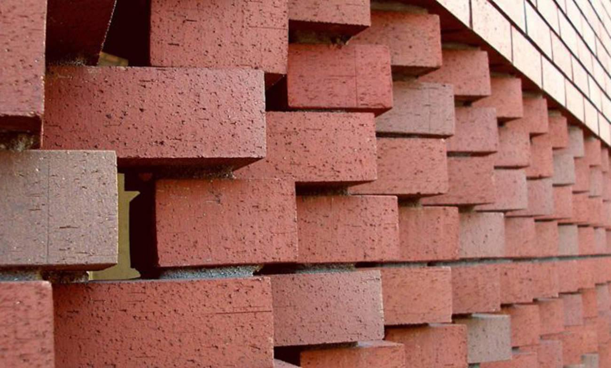

NUESTROS LADRILLOS
-



LADRILLO MACIZO Los ladrillos toletes macizos de arcilla cocidos se utilizan en la construcción de obras civiles principalmente en edificios y viviendas, por los bajos costos del material.Se puede decir que son prensados con arcilla cocida, en forma de paralelepípedo rectangular, en el cual se pueden realizar perforaciones paralelas a una arista.
-
LADRILLOS PANDERETA Existen dos tipos de ladrillo Pandereta liso y acanalado. Ambos tienen la función de hacer muros divisorios, tabiques ligeros (pared delgada que sirve para separar las piezas de la casa). En el caso del ladrillo pandereta liso, su adherencia es más rápida ya que no presenta desniveles.Antes de comprar ladrillos revisa que no presenten rajaduras y que no estén crudos (coloración muy clara) o muy cocidos (coloración marrón negruzca); de lo contrario, serán de baja resistencia o muy quebradizos.